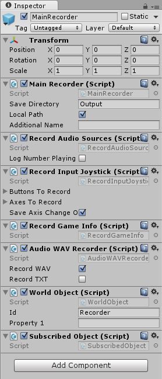
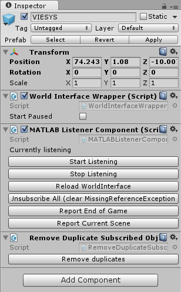

Adding data collection to your own scene¶
Now that you have familiarized yourself with the sample scene, you can implement data collection into your own scene.
Save data to file¶
The section below describes how to save data to file. For output data format, please refer to DOCUMENTATION.
- Main Scripts (other experimental scripts are listed in
DOCUMENTATION):
MainRecorder GameObject¶
The first step is to create the MainRecorder GameObject. This can be conveniently done by dragging the MainRecorder prefab (blue box icon) from the Recorder assets folder into the Hierarchy.
The MainRecorder comes with several script components attached.
MainRecorder¶
- The
MainRecorderscript handles the save directory. Its parameters are: - Save Directory: The path of the directory where the data will be output. This can either be absolute or relative to the project root folder. Use
..to navigate up in the directory tree. - Local Path: Specifies whether the path in Save Directory is local (relative to the project root folder) or absolute.
- Additional Name: An additional string that will be added to the data output folders. For example, this can be set to the subject’s name or ID. In the most typical implementation, however, this value will be set and overwritten by MATLAB when the game is started.
- Save Directory: The path of the directory where the data will be output. This can either be absolute or relative to the project root folder. Use
RecordAudioSources¶
The RecordAudioSources script creates two separate files:
- one file saving every time an audio clip starts playing, and
- one file saving every time the volume of an audio clip perceived by the player changes (for example if the distance between the player and the source changes).
The variable LogNumberPlaying, if set to true (checked), will write to console the number of audio sources playing every frame. This should only be used for debugging purposes, as it might slow down the simulation.
RecordInputJoystick¶
The RecordInputJoystick script records input from the controller. It creates one file for the recorded axes and one for the recorded buttons.
The Buttons To Record menu contains the list of the buttons that should be recorded. By default, all buttons are recorded, but it is possible to remove any of them.
The Axes To Record menu contains the list of the axes that should be recorded. By default, all axes are recorded, but it is possible to remove any of them.
The Save Axis Change Only checkbox specifies whether axes values should be recorded only when they change or every frame.
RecordGameInfo¶
The RecordInputJoystick script records general game information. Please refer to DOCUMENTATION! to learn how to implement recording of features.
AudioWAVRecorder¶
The AudioWAVRecorder script records the audio perceived by the player (AudioListener).
If the Record WAV checkbox is enabled, the audio will be saved to a .wav file.
If the Record TXT checkbox is enabled, the audio data will be saved to a .txt file. Please refer to DOCUMENTATION!!! for more information.
NOTE: This script has known issues and does not record all sounds being played. Please test the script on your project and see if it works for you.
Record Object Position: RecordPositionAttach¶
To record the position and rotation of a GameObject, add the RecordPositionAttach script (found in the Recorder assets folder) to its components.
The Save Object Scale checkbox specifies whether the object’s scale should be recorded.
The Only Save Change checkbox specifies whether the position and rotation data should only be saved when any one of the (position or rotation) coordinates changes.
The Record Local checkbox specified whether the position and rotation of the object should also be recorded respective to its parent GameObject. For example, this might be required for CenterEyeAnchor, as local position and rotation give the player’s head position and rotation in the real world.
Send data over network¶
VIESYS GameObject¶
The first step is to create the VIESYS GameObject. This can be conveniently done by dragging the VIESYS prefab (blue box icon) from the CommunicationWIF assets folder into the Hierarchy.
The VIESYS GameObject comes with various script components attached.
The WorldInterfaceWrapper script is the backbone of the communication with MATLAB. The Start Paused checkbox specifies whether the game should start paused.
The MATLABListenerComponent script exposes some functionalities primarily intended for debugging. Refer to DOCUMENTATION for more information.
The RemoveDuplicateSubscribedObjects button removes duplicate subscribed objects attached to the same GameObject (as they are not required). This is only intended for debugging purposes.
Track object position: WorldObject¶
To track the position and rotation of a GameObject and send it to MATLAB, add the WorldObject script (found in the CommunicationWIF assets folder) to its components. If the object has been SUBSCRIBED!!! (link) from MATLAB, a message will be sent every time the position or rotation of the object has changed.
Use the Id field to specify the name by which MATLAB will refer and subscribe to the GameObject that has this script attached.
Use the Property1 field to send a generic message to MATLAB. The field will be cleared once the message has been sent. You will need to implement your own protocol to send messages through the Property1 field and decode them in MATLAB.